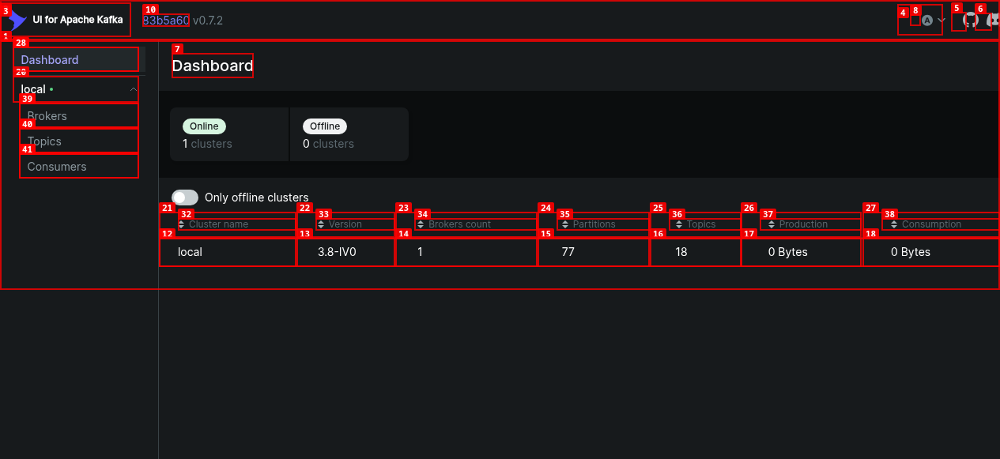
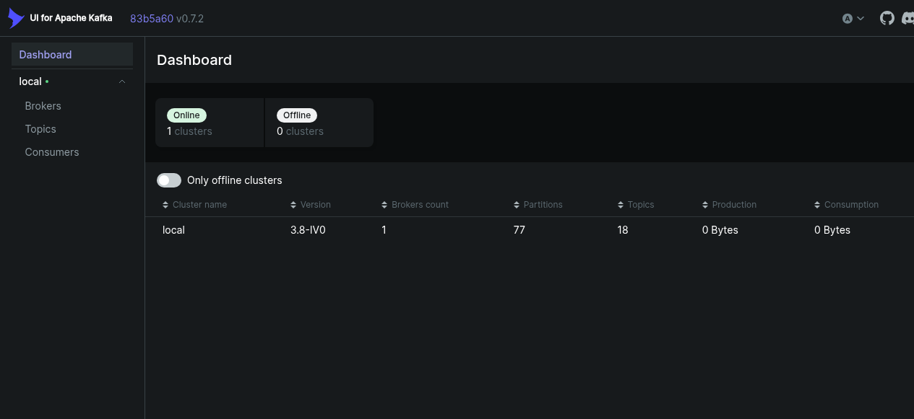
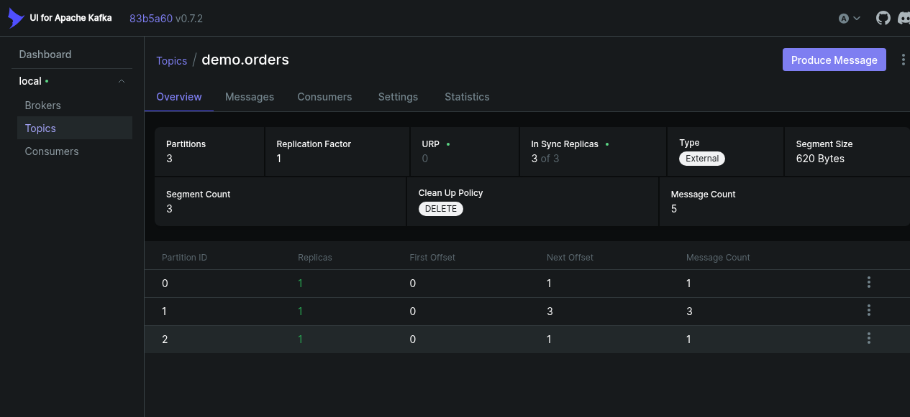
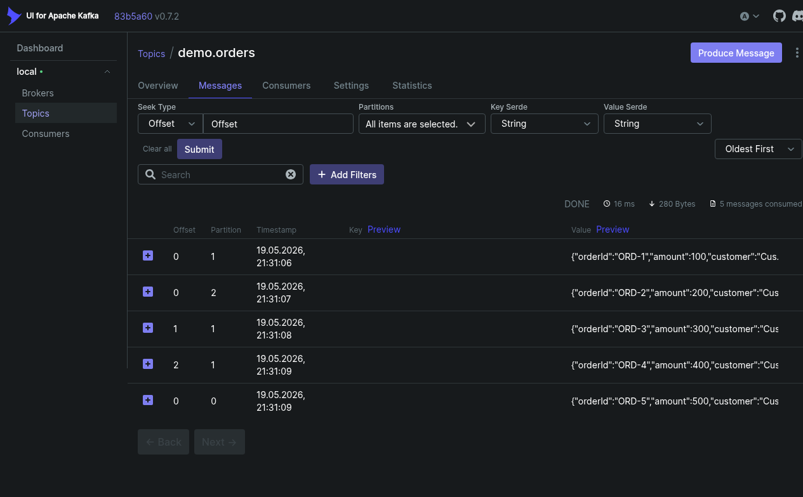
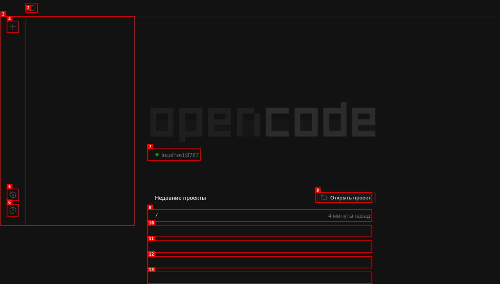

cd ~/workspase/projects/opencode-plugin-kafka
docker compose -f docker-compose.kafka.yml up -dПодождите 30 секунд для запуска Kafka.
Откройте в браузере:
http://localhost:8090Screenshot 1: Kafka UI Dashboard

На dashboard видно: cluster local, 1 broker, 18 topics
Перейдите в раздел Topics в левом меню.
Screenshot 2: Список топиков

Видны все demo-топики: demo.orders, demo.agent-tasks, demo.events, demo.notifications, demo.audit-log
Screenshot 3: Сообщения demo.orders

6 сообщений с заказами ORD-1…ORD-5, включая payment event ORD-22363
Screenshot 4: Сообщения demo.agent-tasks

8 сообщений: 3 task-задачи (TSK-1, TSK-2, TSK-3) и 5 алертов (ALERT-1…ALERT-5)
Откройте в браузере:
http://localhost:8787Screenshot 5: OpenCode Web UI

Интерфейс OpenCode с проектом opencode-plugin-kafka
cd ~/workspase/projects/opencode-plugin-kafka
node scripts/demo-jsonpath-rules.mjsОжидаемый вывод:
📡 JSONPath Rule Matching — Демонстрация
════════════════════════════════════════════════════════════
🅰️ СЛУЧАЙ 1: Сообщение НЕ отрабатывает (no match)
────────────────────────────────────────────────────────────
📥 Input: {"type":"security-check","alerts":[{"severity":"LOW","msg":"Minor issue detected"}]}
📋 Правило: jsonPath: "$.alerts[?(@.severity==CRITICAL || @.severity==HIGH)]"
✅ РЕЗУЛЬТАТ: NO MATCH → Сообщение в DLQ
🅱️ СЛУЧАЙ 2: Только промт (дефолтный агент)
────────────────────────────────────────────────────────────
📥 Input: {"type":"info","message":"User logged in","user":"john@example.com"}
📋 Правило: jsonPath: "$" (match всех сообщений)
✅ РЕЗУЛЬТАТ: MATCHED → Agent: default-agent
📝 Prompt: Process message: User logged in
✅ Ответ: [Mock] Processed by default-agent
🅾️ СЛУЧАЙ 3: Все поля заполнены (полный флоу)
────────────────────────────────────────────────────────────
📥 Input: {"type":"security-check","alerts":[{"severity":"CRITICAL","msg":"SQL Injection!"}]}
📋 Правило: jsonPath: "$.alerts[?(@.severity==CRITICAL|| @.severity==HIGH)]"
✅ РЕЗУЛЬТАТ: MATCHED → Agent: sec-agent → responseTopic: opencode.responses
📝 Prompt: 🚨 CRITICAL ALERT: [{"severity":"CRITICAL","msg":"SQL Injection!"}]
✅ Ответ: [Mock] Processed by sec-agent
📤 Ответ отправлен в Kafka: topic=opencode.responsesnode scripts/demo-agent-cases.mjsОжидаемый вывод:
╔══════════════════════════════════════════════════════════════╗
║ Kafka Plugin — Демонстрация обработки сообщений ║
╚══════════════════════════════════════════════════════════════╝
╔══════════════════════════════════════════════════════════════╗
║ КЕЙС 1: Агент вызван, ответ НЕ отправляется ║
╚══════════════════════════════════════════════════════════════╝
📥 Input: {"action":"LOG","message":"User logged in"}
✅ Matched: log-rule
agentId: logger-agent
responseTopic: null → ответ только в логах
📝 Prompt: Log: User logged in
✅ Agent finished: success
⚠️ responseTopic = null → Ответ НЕ отправляется в Kafka
📊 Flow: Message → Agent → (logs only) → commit
╔══════════════════════════════════════════════════════════════╗
║ КЕЙС 2: Агент вызван, ответ → responseTopic ║
╚══════════════════════════════════════════════════════════════╝
📥 Input: {"type":"process","data":{"orderId":"ORD-123","amount":999.99}}
✅ Matched: process-rule
agentId: processor-agent
responseTopic: demo.responses → ЕСТЬ!
📝 Prompt: Process: {"orderId":"ORD-123","amount":999.99}
✅ Agent finished: success
📤 → Kafka topic: demo.responses
✅ Response sent to Kafka!
📊 Flow: Message → Agent → Response → Kafka → commit
╔══════════════════════════════════════════════════════════════╗
║ КЕЙС 3: Агент ошибся → отправляется в DLQ ║
╚══════════════════════════════════════════════════════════════╝
📥 Input: {"type":"process","data":{"orderId":"ORD-456","amount":1234.56}}
✅ Matched: process-rule
agentId: error-agent → СИМУЛЯЦИЯ ОШИБКИ!
⏳ Invoking agent...
❌ Agent finished: timeout → Connection timeout after 30s
📤 → DLQ (demo.dlq)
Error: Agent invoke failed: Connection timeout after 30s
✅ Error sent to DLQ!
📊 Flow: Message → Agent → (error) → DLQ → commit1. Kafka Topic Message
↓
2. Parse JSON from message.value
↓
3. matchRuleV003(payload, rules)
- Apply jsonPath expression to payload
- Return first matching rule or null
↓
4. buildPromptV003(rule, payload)
- Replace ${$.path} placeholders
- Return final prompt string
↓
5. agent.invoke(options)
- Call OpenCode agent with prompt
- Apply AbortController timeout
↓
┌─────────────────────────────────────────────┐
│ SUCCESS │
│ → Optional: sendResponse() to responseTopic│
│ → commit offset │
├─────────────────────────────────────────────┤
│ ERROR / TIMEOUT │
│ → sendToDlq() with error │
│ → commit offset │
└─────────────────────────────────────────────┘{
"topics": ["demo.orders", "demo.agent-tasks"],
"rules": [
{
"name": "critical-alerts",
"jsonPath": "$.alerts[?(@.severity==CRITICAL || @.severity==HIGH)]",
"promptTemplate": "🚨 CRITICAL ALERT: ${$.alerts}",
"agentId": "sec-agent",
"responseTopic": "opencode.responses",
"timeoutMs": 60000,
"concurrency": 2
},
{
"name": "orders-processing",
"jsonPath": "$.orderId",
"promptTemplate": "Process order: ${$.orderId}, amount: ${$.amount}",
"agentId": "orders-agent",
"responseTopic": "demo.responses"
}
]
}| Возможность | Описание |
|---|---|
| JSONPath routing | Маршрутизация по условиям в payload |
| Template prompts | Шаблоны с подстановкой ${$.field} |
| Multiple agents | Вызов разных агентов для разных типов сообщений |
| Response topics | Опциональная отправка ответов в Kafka |
| DLQ | Ошибки/таймауты → Dead Letter Queue |
| Timeout | Настраиваемый timeout для каждого правила |
| Concurrency | Параллельная обработка сообщений |
| SSL support | SSL/SASL аутентификация для Kafka |
| Retry logic | Автоматический retry при ошибках |
cd ~/workspase/projects/opencode-plugin-kafka/kafka-ssl
# Создание CA
openssl req -new -x509 -keyout ca-key.pem -out ca-cert.pem -days 365 -nodes
# Создание клиентского сертификата
openssl req -new -keyout client-key.pem -out client.csr -nodes
openssl x509 -req -in client.csr -out client-cert.pem -CA ca-cert.pem -CAkey ca-key.pem -CAcreateserialopenssl s_client -connect localhost:9095 -CAfile kafka-ssl/ca-cert.pem| Сервис | URL |
|---|---|
| Kafka UI | http://localhost:8090 |
| OpenCode Web | http://localhost:8787 |
| Команда | Описание |
|---|---|
docker compose -f docker-compose.kafka.yml up -d |
Запуск Kafka |
docker compose -f docker-compose.kafka.yml down |
Остановка Kafka |
node scripts/demo-jsonpath-rules.mjs |
Демо JSONPath |
node scripts/demo-agent-cases.mjs |
Демо обработки |
Демонстрация подготовлена для руководства — opencode-plugin-kafka v0.3.0